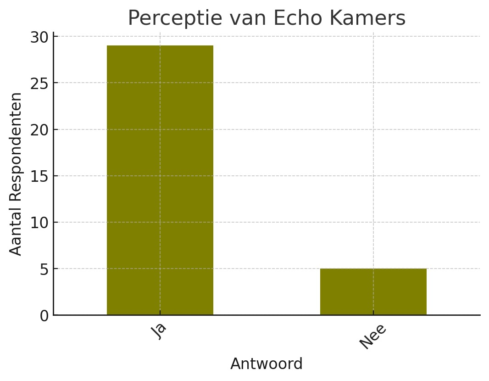

Welkom bij het onderzoek.
Gebruik Form Control om te navigeren.
Introductie
Introductie
In de snel evoluerende wereld van digitale media heeft TikTok zich gevestigd als een krachtig platform dat niet alleen entertainment biedt, maar ook een opvallende invloed uitoefent op de publieke opinie. Dit project richt zich specifiek op de rol van TikTok in het vormgeven van de westerse perceptie van het Israël-Palestina conflict. Met zijn algoritme, dat gerichte content levert, heeft TikTok het potentieel om niet alleen bewustwording te vergroten, maar ook polarisatie te intensiveren.
Hierbij staat de volgende vraag centraal:
In hoeverre heeft het TikTok algoritme invloed op polarisatie binnen de westerse publieke opinie over het Israël-Palestina conflict?
Dit onderzoek bekijkt welke specifieke elementen van de content met betrekking tot het Israël-Palestina conflict de aandacht van TikTok-gebruikers trekken. Daarnaast analyseert dit onderzoek in hoeverre gebruikers vatbaar zijn voor informatie over het conflict en in hoeverre het algoritme bijdraagt aan polarisatie binnen de TikTok-gemeenschap. Dit onderzoek probeert te begrijpen hoe gebruikers interageren met content over het conflict en of er sprake is van epistemische bubbels, waarin specifieke opvattingen worden versterkt.
Met behulp van een diverse methodologie, waaronder literatuurstudie, video-analyse, enquêtes en interviews, streeft dit onderzoek naar een diepgaand inzicht in hoe TikTok de perceptie van het Israël-Palestina conflict vormgeeft. Door deze multidimensionale aanpak hopen we bij te dragen aan een holistisch begrip van de impact van digitale platforms op de vorming van de publieke opinie met betrekking tot geopolitieke kwesties. Dit draagt bij aan het begrijpen van hoe het TikTok-algoritme polarisatie versterkt.
Theoretisch kader
TikTok activismeSociale media spelen een cruciale rol in de hedendaagse communicatie en publieke opinievorming, waarbij platformen zoals TikTok een unieke invloed uitoefenen. Recent onderzoek wijst op de specifieke dynamieken van TikTok in het vormgeven van politiek activisme en publieke meningsvorming. Cervi en Divon (2023) belichten hoe Palestijnse gebruikers TikTok inzetten voor speelse vormen van verzet tijdens het conflict tussen Palestijnen en Israëli's, gebruikmakend van de specifieke ontwerpelementen en functies van het platform. Dit onderstreept de impact van sociale media op de representatie en perceptie van conflicten (Cervi & Divon, 2023).
Sociale media strategie
Daarnaast verkent Hirschberger (2021) hoe conflictpartijen sociale media strategisch inzetten om de publieke opinie in het buitenland te beïnvloeden, wat de complexiteit van externe communicatie in asymmetrische conflicten illustreert (Hirschberger, 2021). De invloed van het TikTok-algoritme, in het bijzonder, wordt verder onderzocht door Boeker en Urman (2022), die aantonen dat factoren zoals taal en locatie, evenals interacties zoals volgen en liken, een significante invloed hebben op de aangeboden content, wat kan leiden tot de vorming van filterbubbels (Boeker & Urman, 2022).
Invloed van het algoritme
Vázquez-Herrero et al. (2020) onderzoeken hoe nieuwsmedia zich aanpassen aan TikTok's platformlogica, wat van belang is voor het begrijpen van hoe informatie over het Israël-Palestina conflict wordt geframed en gepresenteerd aan een jonger publiek (Vázquez-Herrero et al., 2020). Bovendien biedt de studie van Husz'ar et al. (2021) inzichten in de algoritmische versterking van politieke inhoud op Twitter, wat parallellen kan hebben met de werking van het TikTok-algoritme (Husz'ar et al., 2021).
Epistemische bubbels
Nguyen (2018) zegt dat bij epistemische bubbels sprake is van een informatienetwerk, waar relevante stemmen worden weggelaten. Het TikTok-algoritme raadt doelgericht video's aan die de interesses van de gebruiker wekken. Indien de gebruiker dus enkel geïnteresseerd is in één kant van het conflict, kan dit voor een epistemische bubbel zorgen. Hier wordt de andere kant van het conflict door het algoritme weggelaten en wordt de mening van de gebruiker enkel versterkt.
Dit leidt tot de volgende hypotheses:
H1: Het TikTok algoritme leidt tot epistemische bubbels, wat de polarisatie versterkt binnen de westerse publieke opinie.
H0: Het TikTok algoritme leidt tot geen epistemische bubbelvorming, hierdoor versterkt het de polarisatie binnen de westerse publieke opinie niet.
Methode
Methode
Gedurende vijf dagen is er een uitgebreid onderzoek uitgevoerd om de invloed van het TikTok-algoritme op de weergave van content met betrekking tot het Israël-Palestina conflict te onderzoeken. Dit begon met het aanmaken van twee afzonderlijke TikTok-accounts, elk representatief voor een specifiek standpunt binnen het conflict: één pro-Israël en één pro-Palestina. Door dagelijks 30-40 posts te liken die overeenkwamen met de standpunten van elk account, is er geprobeerd het algoritme te beïnvloeden en de reactie in de vorm van aangepaste contentweergave te monitoren.
Naast deze directe interactie met het platform, is er een enquête afgenomen onder TikTok-gebruikers om hun percepties over de contentweergave en het algoritme met betrekking tot het Israël-Palestina conflict te verzamelen. Deze enquête bood waardevolle inzichten in de gebruikerservaring en vulde bevonden observaties aan vanuit het gebruikersperspectief. Respondenten werden gevraagd naar de frequentie waarmee ze content over het conflict tegenkwamen, hun mening over de evenwichtigheid van de weergegeven perspectieven, en of ze het gevoel hadden dat het algoritme bijdroeg aan het creëren van een echokamer.
De combinatie van directe interactie met TikTok via de twee accounts en de feedback van de enquête maakte het mogelijk een diepgaand begrip te krijgen van hoe het algoritme mogelijk de contentweergave beïnvloedt en in hoeverre dit de gebruikerspercepties over het Israël-Palestina conflict vormt. Dit multidimensionale onderzoeksontwerp, dat zowel kwantitatieve data van de platforminteracties als kwalitatieve inzichten van gebruikers omvat, heeft als doel een holistisch beeld te schetsen van de algoritmische invloeden op contentweergave en publieke opinie.
Door de ethische richtlijnen van TikTok strikt te volgen, is ervoor gezorgd dat het onderzoek geen schadelijke gevolgen voor de gemeenschap had. De verzamelde data, waaronder het aantal getoonde posts en de links naar de gelikete content, samen met de enquêteresultaten, zijn vervolgens geanalyseerd. Deze gecombineerde benadering zal helpen bij het trekken van conclusies over de invloed van het TikTok-algoritme op de weergave van content met betrekking tot het Israël-Palestina conflict.
Resultaten
Resultaten
In deze studie naar de invloed van het TikTok-algoritme op de publieke opinie met betrekking tot het Israël-Palestina conflict, leverden de resultaten een opvallende afwijking van de verwachte uitkomsten. Na afloop van de stimulatieperiode van vier dagen, waarbij het pro-Israël account actief pro-Israël content likete, toonde het algoritme uitsluitend pro-Palestina posts aan dit account. Er werden geen pro-Israël posts weergegeven, wat in contrast staat met de interactiepatronen van het account.
Het Pro-Palestina account kreeg net als het Pro-Israël account enkel video's te zien vanuit het Palestijnse perspectief. Dit staat overeen met de interactiepatronen van het account.
Deze resultaten wijzen op complexer algoritmisch gedrag dan enkel een respons op gebruikersinteracties.
Bij de analyse van de content die werd weergegeven aan het pro-Israël account, bleek dat de pro-Palestina posts varieerden van informatieve content tot uitgesproken steunbetuigingen aan de Palestijnse zaak. Deze bevindingen waren verrassend, gezien de actieve interacties van het account met pro-Israël content. Aan de andere kant ontving het pro-Palestina account wel voornamelijk content die overeenkwam met zijn interacties en voorkeuren, wat een asymmetrische benadering door het algoritme suggereert.
Uit de enquête blijkt dat de meerderheid van de jongvolwassenen (18-25 jaar) regelmatig TikTok-video's bekijkt over het Israël-Palestina conflict, met een voorkeur voor content gericht op activisme. Echter, een significant aantal respondenten voelt dat TikTok geen evenwichtige weergave van het conflict biedt, en lijkt de gebruikers in epistemische bubbels te plaatsen door content te tonen die voornamelijk bestaande opvattingen bevestigt.

Discussie
Discussie
De onderzoeksvraag die dit project stelde, betrof de invloed van het TikTok-algoritme op de polarisatie binnen de westerse publieke opinie over het Israël-Palestina conflict. De resultaten van deze studie leveren belangrijke inzichten op in deze kwestie.
Allereerst suggereren de bevindingen dat het algoritme van TikTok niet enkel reageert op de directe interacties van de gebruiker (zoals likes), maar mogelijk ook beïnvloed wordt door bredere, niet-transparante mechanismen. Dit werd duidelijk toen het pro-Israël account, ondanks zijn specifieke interacties, enkel content met een pro-Palestina perspectief getoond kreeg. Dit fenomeen roept vragen op over de mate waarin het algoritme bijdraagt aan het creëren van een evenwichtige of juist eenzijdige informatiestroom.
Deze bevindingen impliceren dat het TikTok-algoritme mogelijk een rol speelt in het vormen van epistemische bubbels, waarbij gebruikers voornamelijk blootgesteld worden aan informatie die overeenkomt met bepaalde standpunten, ongeacht hun eigen voorkeuren of interacties. Dit kan leiden tot een versterking van bestaande overtuigingen en een toename van polarisatie, in plaats van het bevorderen van een divers en gebalanceerd perspectief op het conflict.
Verder is het opmerkelijk dat het algoritme in dit onderzoek de neiging toonde om content te leveren die overeenkwam met één specifieke kant van het conflict, ongeacht de actieve pogingen van het account om een ander perspectief te volgen. Dit roept vragen op over de algoritmische neutraliteit en de potentiële invloed van externe factoren zoals geopolitieke gevoeligheden en platformbeleid.
De enquêteresultaten bevestigen de initiële bevindingen van dit onderzoek, waarbij het algoritme van TikTok neigt naar het versterken van specifieke narratieven, ongeacht de interacties van de gebruiker. Dit wijst op complexer algoritmisch gedrag dan eerder gedacht, met potentieel voor het versterken van polarisatie door eenzijdige informatievoorziening. Het onderstreept de noodzaak voor meer transparantie en evenwicht in algoritmische contentaanbevelingen, gezien de invloed ervan op de vorming van de publieke opinie en de perceptie van geopolitieke conflicten.
Gezien de groeiende rol van sociale media in de vorming van de publieke opinie, onderstreept dit onderzoek de noodzaak van verder onderzoek naar de werking van deze algoritmes, vooral in relatie tot geopolitieke kwesties. Het is van cruciaal belang dat er meer transparantie komt in hoe dergelijke platforms hun content cureren, vooral gezien hun impact op de publieke perceptie en meningsvorming over complexe internationale conflicten.
Dit kan mogelijk zorgen voor groeiende polarisatie tussen generaties binnen de westerse publieke opinie. De demografie van TikTok bestaat voornamelijk uit jongeren onder de 35 (Ceci, 2024), terwijl er al polarisatie bestaat tussen generaties over het Israël-Palestina conflict (Vinall, 2023). TikTok kan mogelijk de bestaande polarisatie verder versterken.
Om verdere conclusies te kunnen trekken over de causaliteit tussen het TikTok algoritme en generationele polarisatie is er echter vervolgonderzoek nodig.
Literatuur
Literatuur
- Becker, M. (2015). ethiek van de digitale media
- Boeker, M., & Urman, A. (2022). An Empirical Investigation of Personalization Factors on TikTok. Proceedings of the ACM Web Conference 2022. https://doi.org/10.1145/3485447.3512102
- Ceci, L. (2024). TikTok: distribution of global audiences 2024, by ages and gender Statista https://www.statista.com/statistics/1299771/tiktok-global-user-age-distribution/
- Cervi, L., & Divon, T. (2023). Playful Activism: Memetic Performances of Palestinian Resistance in TikTok #Challenges. Social Media + Society. https://doi.org/10.1177/20563051231157607
- Hirschberger, B. (2021). External Communication in Social Media During Asymmetric Conflicts. Edition Politik. https://doi.org/10.1515/9783839455098
- Husz'ar, F., Ktena, S., O’Brien, C., Belli, L., Schlaikjer, A., & Hardt, M. (2021). Algorithmic amplification of politics on Twitter. Proceedings of the National Academy of Sciences of the United States of America, 119. https://doi.org/10.1073/pnas.2025334119
- Nguyen, C.T. (2018). ‘Why it’s as hard to escape an echo chamber as it is to flee a cult’ (p.1-11) Aeon Essays: https://aeon.co/essays/why-its-as-hard-to-escape-an-echo-chamber-as-it-is-to-flee-a-cult
- Royakkers, L., Timmer, J., Kool, L., & Est, R. van. (2018). ‘Societal and ethical issues of digitization’. Ethics and Information Technology, 202, 127-142. https://doi.org/10.1007/s10676-018-9452-x
- Vázquez Herrero, J., Negreira, C., & García, X. (2020). Let’s dance the news! How the news media are adapting to the logic of TikTok. Journalism, 23, 1-19. doi:10.1177/1464884920969092
- Vinall, F. (2023). Young Americans are more pro-Palestinian than their elders. Why?. Washington Post. https://www.washingtonpost.com/world/2023/12/21/us-support-israel- palestine-poll/